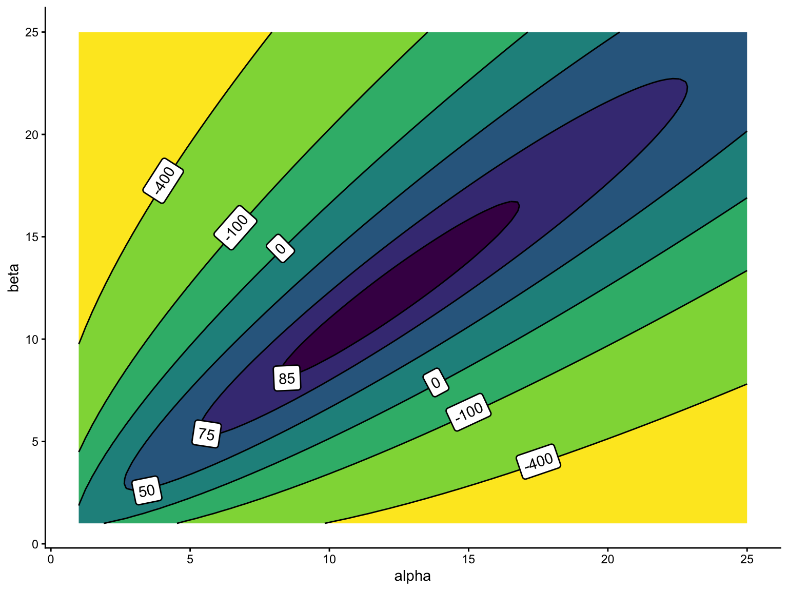
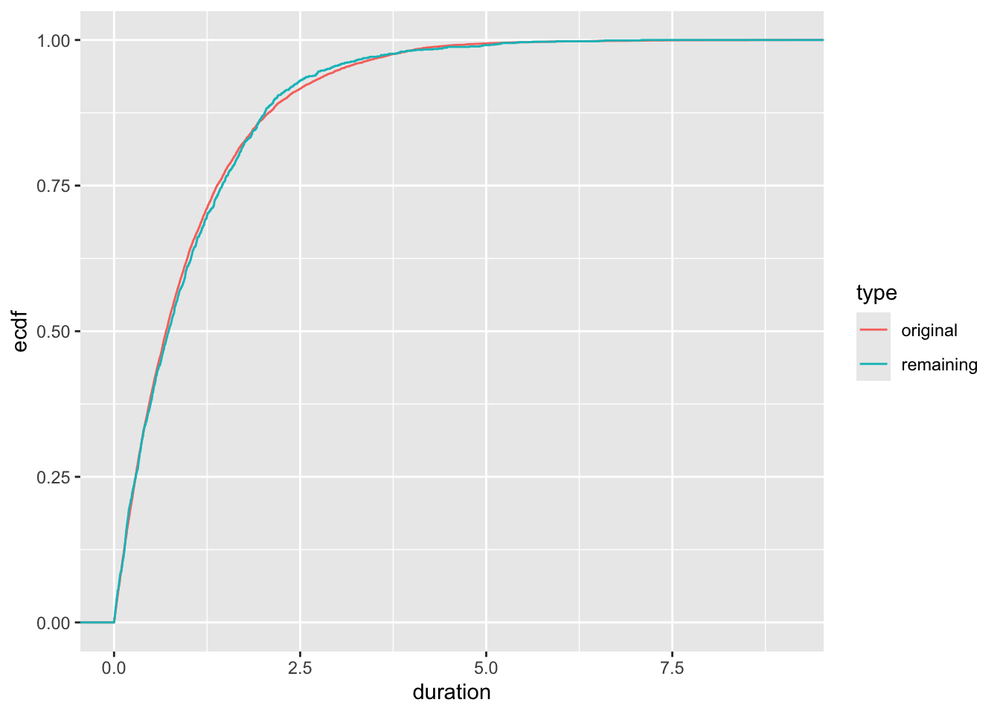
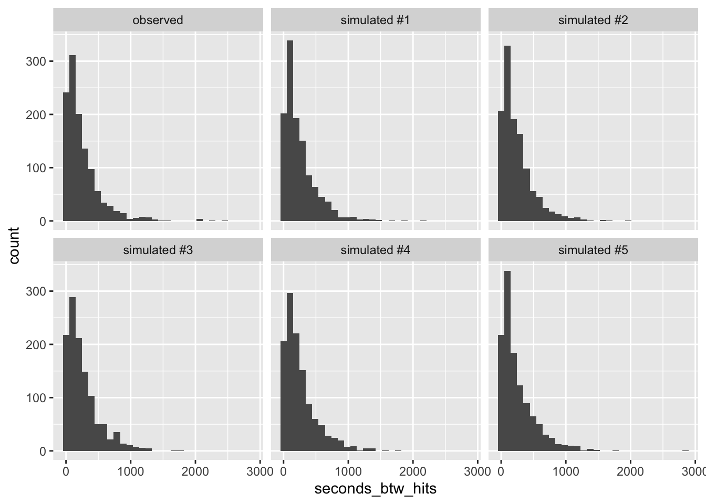
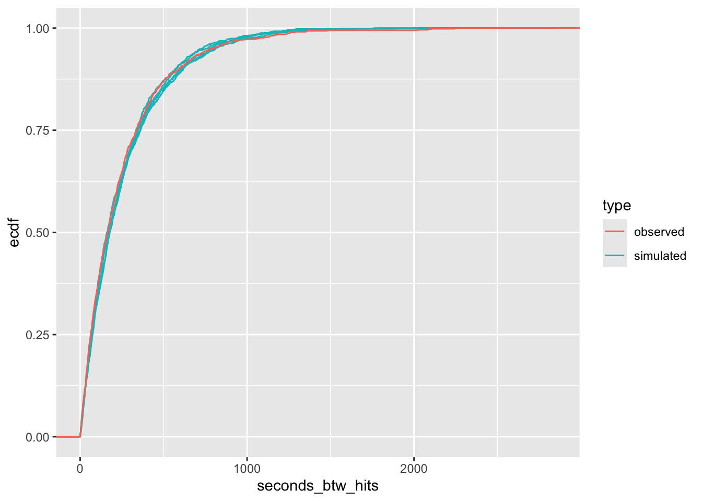
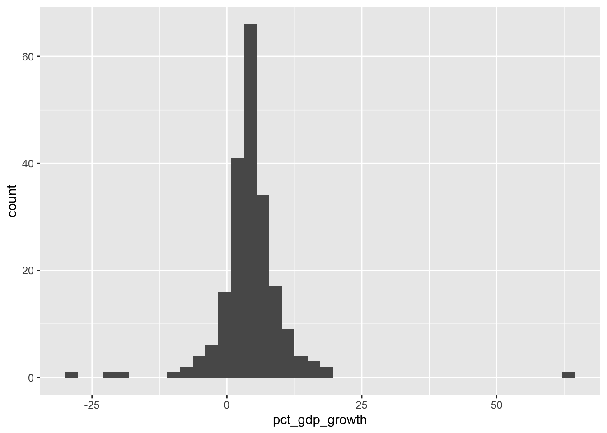
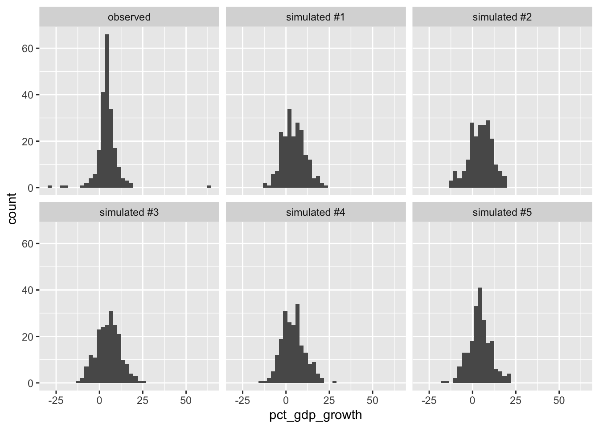
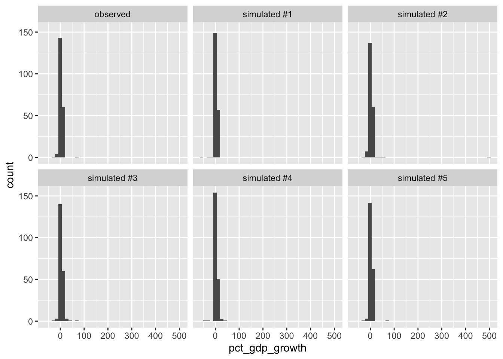
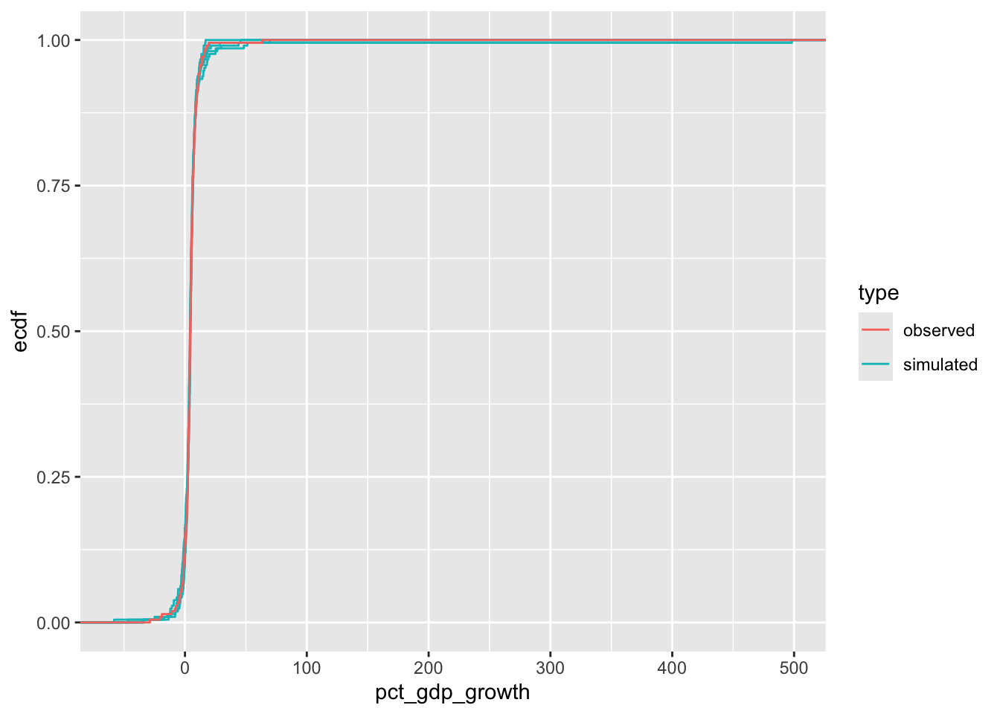

set.seed(42)
y <- rbinom(2000, 1, 0.5)
prod(dbinom(y, 1, 0.5)) # the likelihood, computed directly
sum(dbinom(y, 1, 0.5, log = TRUE)) # the log-likelihoodWeek 2 Exercises
Instructor and TA copy: complete solutions, always open
Complete solutions are available. Work each exercise before you open one.
Do all the exercises below.
Maximum Likelihood
Exercise 1 A Function of What?
For the Bernoulli model, we wrote the likelihood as \(L(\pi) = \pi^{k}(1 - \pi)^{(N - k)}\), where \(k\) is the number of successes in \(N\) trials. In the likelihood, which symbol is the variable? Which symbol(s) are fixed? In one sentence, describe the question that \(L(\pi)\) answers.
Hint 1
In the pmf \(f(x; \pi)\), we treat \(x\) as the variable and \(\pi\) as fixed. What changes when we relabeled \(f(x; \pi)\) as \(L(\pi)\)?
Hint 2
Before the notes ever introduce \(L(\pi)\), the Bernoulli section evaluates the likelihood (for the toothpaste cap data) at several candidate values of \(\pi\) (0.1, 0.45, 0.55, and 0.9). Reread that paragraph.
Complete solution
The likelihood reverses the roles of \(x\) and \(\pi\) compared to \(f(x; \pi)\).
We think of \(f(x; \pi)\) as “the probability of \(x\), given \(\pi\).”
But for the likelihood, the data are fixed (we observed them!), and we want to vary the parameter (to optimize across it). Thus, for \(L(\pi)\), the variable is \(\pi\) and the data (or summaries \(k\) and \(N\), in this case) are fixed numbers.
\(L(\pi)\) answers the question: if the parameter were \(\pi\), how likely would these data be? ML then finds the \(\pi\) that makes the observed data most likely.
Something that’s wrong: the likelihood is not a probability distribution over \(\pi\). It doesn’t integrate to one. It does not allow a probability claim about the parameter.
Exercise 2 Why the Log? Predict, Then Check
Suppose you observe 2,000 Bernoulli trials with \(\pi = 0.5\), so that each observation equals one with probability 0.5 and zero with probability 0.5. The likelihood is the product of these 2,000 probabilities.
Before you run it, predict what the first line of R code below returns. Write down your reasoning.
Now run both lines. Explain what happened, why it’s expected, and why it matters for ML. The log fixes this computational problem. How?
Hint 1
The product is \(0.5^{2000}\). Figure out roughly how big that is as a power of ten. Compare that to the smallest positive number R can store (i.e., run .Machine$double.xmin).
Use this rule of thumb: \(2^{10} = 1024 \approx 10^3\). In turn, \(\left(\frac{1}{2}\right)^{10} \approx 10^{-3}\), so that ten halvings is about the same as three orders of magnitude.
Hint 2
The notes give two separate reasons for taking the log (i.e., where they define \(L(\pi)\) in the Bernoulli example). One reason is what you just watched happen in R.
Complete solution
Start with the prediction. The product is \(0.5^{2000} \approx 10^{-600}\). Computers can’t keep track of numbers that small (the smallest positive number R can store is about \(10^{-308}\); run .Machine$double.xmin), so prod() returns exactly 0.
set.seed(42)
y <- rbinom(2000, 1, 0.5)
prod(dbinom(y, 1, 0.5)) # the likelihood, computed directly[1] 0sum(dbinom(y, 1, 0.5, log = TRUE)) # the log-likelihood[1] -1386.294The log-likelihood works just fine, though. It’s \(2000 \log(0.5) \approx -1386.29\). This is a very ordinary number that computers can handle.
(Importantly, a hill-climbing algorithm can’t climb a function that returns 0 everywhere!)
Exercise 3 What a Grid Can Miss
Suppose a colleague uses a Bernoulli model and estimates \(\pi\) by computing the log-likelihood at the eleven values \(0, 0.1, 0.2, \ldots, 1\) and reporting the best of the eleven as “the ML estimate.” In one or two sentences, in what sense is that answer wrong, and how would you tighten it?
Complete solution
A grid will almost never contain the maximum. Instead the maximum will lie between the elements on the grid. For example, the true ML estimate is \(k/N\). Unless we’re lucky, this will not be a multiple of 0.1.
To tighten the answer, we could make the grid finer near the peak (or just use calculus or optim()).
Exercise 4 From Derivative to Estimator
Last week, we computed \(\frac{d\ell}{d\pi}\) for \(\ell(\pi) = S \log(\pi) + (N - S)\log(1 - \pi)\). Set the derivative equal to zero, set \(\pi = \hat{\pi}\), solve for \(\hat{\pi}\).
Complete solution
We already found that \(\frac{d\ell}{d\pi} = \frac{S}{\pi} - \frac{N - S}{1 - \pi}\). Setting \(\frac{d\ell}{d\pi} = 0\), setting \(\pi = \hat{\pi}\), and solving for \(\hat{\pi}\), we obtain
\[ \begin{aligned} \frac{S}{\hat{\pi}} &= \frac{N - S}{1 - \hat{\pi}} \\ S(1 - \hat{\pi}) &= (N - S)\hat{\pi} \\ S - S\hat{\pi} &= N\hat{\pi} - S\hat{\pi} \\ S &= N\hat{\pi} \\ \hat{\pi} &= \frac{S}{N}. \end{aligned} \]
The ML estimate is the fraction of successes (i.e., the sample average of the 0s and 1s).
Exercise 5 Reading a Contour Plot
The plot below shows the log-likelihood for the beta model from the notes. We have 100 observations (in this case, fake data simulated from a beta distribution). I computed the log-likelihood \(\log L(\alpha, \beta)\) over a grid of parameter pairs.

- Roughly where is the ML estimate?
- What does a labeled curve on this plot mean (i.e., what do the points on that curve have in common)?
- For the Bernoulli model, we found \(\hat{\pi}\) quickly with pencil and paper. Why can’t we do that here?
Complete solution
Part (a) Around \(\alpha = 12\), \(\beta = 12\). (optim() found the maximum at \(\hat{\alpha} \approx 12.0\) and \(\hat{\beta} \approx 11.9\).)
Part (b) A curve is a level set, such that every pair \((\alpha, \beta)\) on that curve produces the same value of the log-likelihood. If we imagine the contour plot as a mountain coming off the screen toward us, then each point along a curve is at the same “height” on that mountain (i.e., if you followed that path, you would go around the mountain and never up or down.)
Part (c) The beta log-likelihood contains the expression \(\log B(\alpha, \beta)\). We can evaluate that term for any \(\alpha\) and \(\beta\) we like (e.g., use lbeta() in R). But we cannot differentiate it and solve to find a closed-form solution (e.g., like we did for Bernoulli). Intractability is the usual situation; our first few tractable models are the exceptions.
Exercise 6 Diagnose the Error
A classmate estimates a Poisson rate \(\lambda\). Their code runs without an error or a warning:
y <- c(12, 7, 9, 12, 10)
ll_pois <- function(par, y) {
sum(dpois(y, lambda = par, log = TRUE))
}
est <- optim(par = 1,
fn = ll_pois,
y = y,
method = "Brent",
lower = 0.001, upper = 100)
est$par[1] 100But the estimate is absurd. The average of y is 10, but \(\hat{\lambda} = 100\). What went wrong? How can they fix the code? What is the category of the mistake: a typo, an algebra error, or something else?
Hint
When you hand optim() a function, what does it do by default: maximize or minimize? See the Details section of ?optim.
Complete solution
optim() is a minimizer by default. By default, it looks for the “minimum likelihood.” We know that the Poisson log-likelihood always gets smaller as \(\lambda\) moves away from the average of y. The search “climbed” to the edge of the parameter space (i.e., [0.001 to 100]) and stopped.
Don’t read much into which bound optim() found. Our hill-climbing algorithms assume the function has a single interior minimum. In this case, the log-likelihood at lower = 0.001 is actually even smaller than the log-likelihood at upper = 100, so optim() didn’t even land on the smaller of the two endpoints. It just “climbed” downhill (in the wrong direction!) until it ran out of space.
To maximize, we need control = list(fnscale = -1). This flips the function over by multiplying it by \(-1\). This turns a minimizer into a maximizer.
est <- optim(par = 1,
fn = ll_pois,
y = y,
control = list(fnscale = -1),
method = "Brent",
lower = 0.001, upper = 100)
est$par[1] 10Now \(\hat{\lambda} = 10\), which matches the closed form.
It’s not a typo and it’s not algebra. The code computed exactly what it was told to compute. It is a misunderstanding of how the tool works. This is a dangerous category of error.
Exercise 7 Trust It or Not?
Your optim() call returns $convergence = 1, and $par equals the upper bound you supplied. Do you trust the estimate?
Hint
?optim’s Value section documents every $convergence code.
Complete solution
No. $convergence = 1 means the algorithm hit its iteration limit without converging (see ?optim). Also, a parameter estimate sitting exactly on a boundary is a red flag.
Exercise 8 An Unfamiliar Density
Suppose a random variable has pdf \(f(x; \theta) = \theta x^{\theta - 1}\) for \(0 < x < 1\) and \(\theta > 0\), and suppose we collect \(N\) iid observations \(x = \{x_1, x_2, \ldots, x_N\}\).1 Find the ML estimator of \(\theta\).
Hint 1
What steps did we use for the Bernoulli and the Poisson? Start the same way here. Write \(L(\theta)\) as a product over the observations.
Hint 2
Take the log and then use the rules for logs to simplify.
You should end up with two terms: one involving \(\log \theta\) and one involving \(\sum \log x_i\).
Self-check
Your formula and optim() must agree. For x <- c(0.2, 0.5, 0.9), evaluate your \(\hat{\theta}\) formula, then run the code below and compare.
x <- c(0.2, 0.5, 0.9)
ll_fn <- function(theta, x) {
sum(log(theta) + (theta - 1)*log(x))
}
est <- optim(par = 1,
fn = ll_fn,
x = x,
control = list(fnscale = -1),
method = "Brent",
lower = 0, upper = 100)
est$parComplete solution
First, write down the likelihood and simplify the product:
\[ L(\theta) = \prod_{i = 1}^N \theta x_i^{\theta - 1} = \theta^N \prod_{i = 1}^N x_i^{\theta - 1}. \]
Second, take the log. The product becomes a sum. Use \(\log(a^b) = b \log(a)\) to bring the exponent out front:
\[ \log L(\theta) = N \log \theta + (\theta - 1) \sum_{i = 1}^N \log x_i. \]
Third, differentiate with respect to \(\theta\):
\[ \frac{d \log L}{d\theta} = \frac{N}{\theta} + \sum_{i = 1}^N \log x_i. \]
Fourth, set the derivative to zero, set \(\theta = \hat{\theta}\), and solve:
\[ \hat{\theta} = \frac{N}{-\sum_{i = 1}^N \log x_i}. \]
For the self-check data, \(\hat{\theta} = 3 / [-(\log 0.2 + \log 0.5 + \log 0.9)] \approx 1.246\), and optim() returns 1.246.
The Invariance Property
Exercise 9 One Line of Invariance
Let \(\hat{\theta}\) be the ML estimate of \(\theta\). Suppose we are interested in \(\psi = \theta^2\). What is the ML estimate of \(\psi\)?
Hint
The notes have a chapter that describes how to turn an ML estimate of a parameter into an ML estimate of a function of that parameter without writing down a new likelihood.
Complete solution
By the invariance property, the ML estimate of a function of a parameter is the function of the ML estimate:
\[ \hat{\psi} = \hat{\theta}^2. \]
That’s the whole answer, and the brevity is the point. We don’t need to derive a new likelihood for \(\psi\).
This is a very powerful, useful property.
Exercise 10 The Exponential Model
The exponential distribution has pdf \(f(t; \lambda) = \lambda e^{-\lambda t}\) for \(t \geq 0\) and \(\lambda > 0\). We might use the exponential distribution to model durations. A duration is the time until an event, such as the end of a coalition government.
- Suppose we collect \(N\) iid durations \(t = \{t_1, t_2, \ldots, t_N\}\). Find the ML estimator of \(\lambda\).
- The parameter \(\lambda\) is called the rate. The mean of the exponential distribution is \(\frac{1}{\lambda}\).2 Find the ML estimator of the mean.
For part (a)
This is very similar to the derivation of the ML estimate of \(\lambda\) for the Poisson distribution, with one important difference. Be careful with your algebra!
Complete solution
Part (a)
First, write down the likelihood and simplify:
\[ L(\lambda) = \prod_{i = 1}^N \lambda e^{-\lambda t_i} = \lambda^N e^{-\lambda \sum_{i = 1}^N t_i}. \]
Second, take the log. The product becomes a sum. Remember that \(\log e^u = u\):
\[ \log L(\lambda) = N \log \lambda - \lambda \sum_{i = 1}^N t_i. \]
Third, differentiate:
\[ \frac{d \log L}{d\lambda} = \frac{N}{\lambda} - \sum_{i = 1}^N t_i. \]
Fourth, set the derivative to zero at \(\lambda = \hat{\lambda}\) and solve:
\[ \hat{\lambda} = \frac{N}{\sum_{i = 1}^N t_i} = \frac{1}{\text{avg}(t)}. \]
Thus, the ML estimator of the rate is the reciprocal of the average duration.
Part (b) By the invariance property, the ML estimator of the mean \(\frac{1}{\lambda}\) is
\[ \widehat{\text{mean}} = \hat{\mu} = \frac{1}{\hat{\lambda}} = \text{avg}(t). \]
The ML estimate of the mean duration is the average duration, which seems sensible!
Exercise 11 Four Models, One Number
Suppose you observe the binary outcome y <- c(0, 1, 0, 1, 1, 1, 0) and you want to estimate the mean of the distribution that generated it. Naturally, you’d model these data as Bernoulli and estimate \(\pi\). But suppose that instead you model these 0s and 1s with a normal distribution. What is your ML estimate of the mean? What if you use the Poisson? The exponential?
Complete the table below. For each model, find the ML estimates of the parameters, then the estimate of the mean via the invariance property if needed. What do you notice? Explain.
| Distribution | Parameter(s) | ML estimates | Estimate of the mean |
|---|---|---|---|
| Bernoulli | \(\pi\) | ?? | ?? |
| Normal | \(\mu\), \(\sigma^2\) | ?? | ?? |
| Poisson | \(\lambda\) | ?? | ?? |
| Exponential | \(\lambda\) | ?? | ?? |
Complete solution
Here’s the completed table, for y with \(\text{avg}(y) = \frac{4}{7} \approx 0.571\).
| Distribution | Parameter(s) | ML estimates | Estimate of the mean |
|---|---|---|---|
| Bernoulli | \(\pi\) | \(\hat{\pi} = \text{avg}(y) \approx 0.571\) | \(\hat{\pi} \approx 0.571\) (no transformation needed: \(E(Y) = \pi\)) |
| Normal | \(\mu\), \(\sigma^2\) | \(\hat{\mu} = \text{avg}(y) \approx 0.571\) and \(\hat{\sigma}^2 = \frac{\sum (y_i - \bar{y})^2}{N} \approx 0.245\) | \(\hat{\mu} \approx 0.571\) |
| Poisson | \(\lambda\) | \(\hat{\lambda} = \text{avg}(y) \approx 0.571\) | \(\hat{\lambda} \approx 0.571\) (\(E(Y) = \lambda\)) |
| Exponential | \(\lambda\) | \(\hat{\lambda} = \frac{1}{\text{avg}(y)} = 1.75\) | \(\frac{1}{\hat{\lambda}} = \text{avg}(y) \approx 0.571\) |
No matter which model we use, we obtain an identical estimate of the mean. Not the same in expectation. Not the same asymptotically. It’s the exact same number, regardless of the model.
And importantly, whatever properties one of these estimators has, the others share, because the estimates are identical. If one is consistent, all are consistent. If one is unbiased, all are unbiased.
The lesson is worth stating carefully: the quality or usefulness of an estimator doesn’t always depend on every part of the model being right. The usefulness of a model often depends on what quantity you’re targeting. These four models agree exactly about the mean of these data.
(But, as Exercise 13 and the model-checking exercises below show, these models can disagree wildly about other important things.)
Exercise 12 N or N − 1?
R’s var(y) is not the ML estimate of \(\sigma^2\) for a normal model. What’s the difference between the two? Which one is bigger? And does the difference matter at \(N = 10{,}000\)? Check your answers numerically using some vector of data.
Hint
The notes derive the ML estimator for \(\sigma^2\) by solving \(\frac{d \log L}{d \sigma^2} = 0\). Find that derivation in the notes. What is the denominator? Compare it to the denominator for var(), which is explained deep in the Details of ?var.
Self-check
For the numeric check, compute the sum of squared deviations from the mean. Then use the two alternative denominators. Compare each result to var().
# pick any vector, e.g.:
y <- rnorm(1000)
var(y)
# your ML formula for sigma^2, using y directly (not from var(y))Complete solution
var() divides the sum of squared deviations by \(N - 1\) (the classic, unbiased estimator). The ML estimator divides by \(N\) (see the notes), so var() is larger by a factor of \(\frac{N}{N-1}\).
set.seed(1)
y <- rnorm(10000, mean = 5, sd = 2)
var(y) # divides by N - 1[1] 4.099462sum((y - mean(y))^2) / length(y) # ml estimate: divides by N[1] 4.099052At \(N = 10{,}000\) the two differ in the fourth decimal, which is practically nothing. But the conceptual distinction is important. They are different estimators, derived from different principles. And at small \(N\), the difference is sometimes visible.
Exercise 13 The SD the Model Implies
Holland (2015) measures the number of enforcement operations (i.e., a “count”) against street vendors across districts in three Latin American cities. The data are in crdata::holland2015.3 The notes use the Poisson model and estimate the mean \(\lambda\) separately for each city. Now let’s estimate the standard deviation of the number of operations (rather than the mean).
- What does the Poisson model assume about the SD of the data, in terms of \(\lambda\)?
- Use the invariance property to estimate the SD of the operations counts in each city from \(\hat{\lambda}\).
- Compute the observed sample SD in each city and compare (i.e., use
sd()). What do you find? Why is this interesting or important?
For parts (a) and (b)
For a Poisson distribution, how is the variance related to the mean? Write the SD as a function of \(\lambda\), then estimate it by plugging in \(\hat{\lambda}\).
The distributions appendix has the answer.
For part (c)
You already grouped the operations counts by city to compute \(\hat{\lambda}\) in part (b). Apply that same grouping here, and compute each city’s sample SD with sd().
Complete solution
Part (a) Recall that the Poisson has \(\text{Var}(Y) = E(Y) = \lambda\), so the model assumes the SD is \(\sqrt{\lambda}\). In this case, the spread is determined by the mean. The variance and the mean have no freedom to differ.
Parts (b) and (c) By the invariance property, we estimate the SD with \(\widehat{\text{SD}} = \sqrt{\hat{\lambda}}\).
# load holland's data
holland2015 <- crdata::holland2015
holland2015 |>
group_by(city) |>
summarize(lambda_hat = mean(operations),
sd_implied = sqrt(lambda_hat),
sd_sample = sd(operations))# A tibble: 3 × 4
city lambda_hat sd_implied sd_sample
<chr> <dbl> <dbl> <dbl>
1 bogota 8.89 2.98 6.94
2 lima 23.2 4.82 18.8
3 santiago 2.71 1.64 4.94For every city, the sample SDs are roughly two to four times the model SDs (Santiago 4.9 vs. 1.6; Bogotá 6.9 vs. 3.0; Lima 18.8 vs. 4.8). These counts are far more dispersed than a Poisson allows. This is called overdispersion, and it’s almost always present in count data.
Notice what kind of failure this is. Nothing is wrong with \(\sqrt{\hat{\lambda}}\) as an estimate of the model’s SD. Invariance did its job. The problem lies with the model. The Poisson assumes a particular relationship between the SD and the mean. These data are inconsistent with that assumed relationship. The predictive-distribution chapter shows this mismatch in detail for Lima.
When the Recipe Fails
Exercise 14 The Discrete Uniform
Suppose a discrete uniform distribution on \(\{0, 1, \ldots, K\}\), with pmf \(f(x; K) = \frac{1}{K + 1}\) for \(x \in \{0, 1, \ldots, K\}\). Suppose we observe a sample of size 3: 276, 159, and 912.
- Find the ML estimate of \(K\). Hint: The likelihood is discontinuous in \(K\), so differentiate-and-solve will mislead you. But the maximum is immediately apparent once you write out the likelihood. Use a verbal, logical argument here, rather than the usual recipe.
- Find the method of moments estimate of \(K\). Hint: The mean of this distribution is \(\tfrac{K}{2}\). Set the sample mean equal to the model mean and solve.
- For these data, the method of moments estimate falls below the largest observation. This is unsatisfying because the data themselves rule out that estimate of \(K\) as impossible. This raises the question: how bad can this get? Construct a three-observation dataset that makes the ratio \(\hat{K}_{MM} / \max(x)\) as small as you can. What is the smallest value the ratio can take with three observations?
- In a sentence or two, describe what these two failures teach us about choosing an estimator.
For part (c)
You are minimizing the ratio \(2 \cdot \text{avg}(x) / \max(x)\) (i.e., part (b)’s formula divided by the largest observation). \(\max(x)\) is fixed, so which direction should you push the other two observations to shrink the average?
Complete solution
Part (a) The likelihood is
\[ L(K) = \prod_{i=1}^N \frac{1}{K+1} = \left(\frac{1}{K+1}\right)^N \]
if every observation lies in \(\{0, 1, \ldots, K\}\), and \(0\) if any observation exceeds \(K\). This function is not differentiable, so the recipe isn’t useful. Notice that making \(K\) smaller makes each data point more likely, until we’ve made \(K\) too small. So to make \(L(K)\) as large as possible, we make \(K\) as small as the data allow. That’s \(\hat{K}_{ML} = \max(x) = 912\).
Part (b) Set the sample mean equal to the model mean, \(\text{avg}(x) = \frac{\hat{K}_{MM}}{2}\). Then, solving for \(\hat{K}_{MM}\) gives \(\hat{K}_{MM} = 2 \cdot \text{avg}(x) = 2 \cdot 449 = 898\).
Part (c) We want \(2 \cdot \text{avg}(x)\) small while \(\max(x)\) stays large, so push the other two observations as low as they can go, which is \(x = (0, 0, 912)\). Then \(\text{avg}(x) = 304\), \(\hat{K}_{MM} = 608\), and the ratio is \(608/912 = \tfrac{2}{3}\). This means that \(\tfrac{2}{3}\) is the smallest possible ratio. With three observations, \(\text{avg}(x) \geq \frac{\max(x)}{3}\).
\[ \hat{K}_{MM} = 2 \cdot \text{avg}(x) \;\geq\; \frac{2}{3}\max(x). \]
Part (d) Both estimators “work” in the sense that the procedure produces a number. But each misbehaves differently. The ML estimate is the smallest logically possible value of \(K\), which intuition says is probably too low. And the method of moments can produce values of \(K\) the data have already contradicted.
These diverging misbehaviors make this problem useful for thinking about how we evaluate models (a little later in the course), so remember this problem.
Checking the Model
Exercise 15 The Remaining Wait
The exponential distribution from Exercise 10 is our first model for durations. However, this model makes a simple assumption about wait times that turns out to be really interesting and important!
Show that the cdf of the exponential distribution is \(F(t; \lambda) = \Pr(T \leq t) = 1 - e^{-\lambda t}\). Then define the survival function \(S(t; \lambda) = \Pr(T > t) = 1 - F(t; \lambda)\) and interpret it (i.e., for an input \(t\), what does \(S\) return)?
Suppose you’ve already waited \(s\) units of time without the event occurring. Using the definition of conditional probability and the survival function, find \(\Pr(T > t + s \mid T > s)\). Compare your answer to \(\Pr(T > t)\). What do you notice? Write it down in one sentence before you start part (c).
Now check your sentence against a simulation. The code below draws 10,000 durations and computes, for the draws that lasted past time 2, how much longer they lasted.
set.seed(123) durations <- rexp(10000, rate = 1) remaining <- durations[durations > 2] - 2Compare the distribution of
remainingto the distribution of the originaldurations(plotting both ECDFs in one panel works well). Do the plots confirm or refute your sentence from (b)?Name one political process that your finding might describe well, and one that it might not. Explain.
For part (a)
The cdf accumulates the density: \(F(t; \lambda) = \int_0^t \lambda e^{-\lambda u}\, du\). Use integration rules from Week 1.
For part (b)
What is the event “\(T > t + s\) and \(T > s\)”? Notice that one of the two conditions implies the other.
For part (b), a second nudge
Write the conditional probability as a ratio of survival functions and substitute \(S(t; \lambda) = e^{-\lambda t}\).
Complete solution
Part (a) Integrate the pdf from \(0\) to \(t\):
\[ F(t; \lambda) = \int_0^t \lambda e^{-\lambda u}\, du = \lambda \left[ \frac{-1}{\lambda} e^{-\lambda u} \right]_0^t = -e^{-\lambda t} + e^{0} = 1 - e^{-\lambda t}. \]
Subtracting from one, we obtain the survival function:
\[ S(t; \lambda) = \Pr(T > t) = e^{-\lambda t}. \]
\(S\) returns the probability that the event has not yet occurred by time \(t\). (The cdf returns the probability that it has.) If \(t = 3\) years and \(S(3; \lambda) = 0.20\), there’s a 20% chance the event happens after year three.
Part (b) The key step: when \(T > t + s\), then \(T > s\) automatically, so the joint event is just \(T > t + s\). By the definition of conditional probability,
\[ \Pr(T > t + s \mid T > s) = \frac{\Pr(T > t + s)}{\Pr(T > s)} = \frac{e^{-\lambda (t + s)}}{e^{-\lambda s}} = e^{-\lambda t} = \Pr(T > t). \]
Notice that the \(s\) cancels! Thus, the two are exactly the same. This is important: the probability of waiting at least \(t\) more units of time doesn’t depend on how long you’ve already waited. This is the memoryless property. The exponential is the only continuous distribution that has this property.
Part (c) Here \(s = 2\). The vector remaining holds the remaining durations of the draws that made it past time 2. This makes remaining a sample from the distribution of \(T - s\) given \(T > s\). Plotting its ECDF over the ECDF of the original durations allows us to check part (b)’s claim.
set.seed(123)
durations <- rexp(10000, rate = 1)
remaining <- durations[durations > 2] - 2
# stack the two sets of durations into one tidy data frame
df <- bind_rows(
data.frame(duration = durations, type = "original"),
data.frame(duration = remaining, type = "remaining")
)
# compare the two ecdfs in a single panel
ggplot(df, aes(x = duration, color = type)) +
stat_ecdf()
The two ECDFs sit right on top of each other! Of the 10,000 draws, only 1353 survived past time 2, so the remaining curve uses less data and wiggles around a little more.
Part (d) The property is perhaps plausible for wait times “with no internal clock,” such as the time between militarized disputes in a region or between filibusters in a session. (Below, Exercise 16 looks at the time between hits in a hockey game.) Memorylessness fails for cabinet duration, the example mentioned back in Exercise 10. If I ask how much longer a coalition will last, you’d definitely want to know how long it has lasted already. Human lifespans are similar. If I asked how much longer a person will live, you’d definitely want to know how old that person is now.
Exercise 16 Herron’s Hockey Data
Herron’s hockey data set records the time between hits4 in the regulation periods of all 82 regular-season games for the Chicago Blackhawks.
Before looking at the data, do you expect an exponential model to fit the times between hits? Do you expect memorylessness to work well here? Write down your prediction and your reasoning. It could be that hits cluster together (i.e., a hit sparks retaliation). Or maybe a long lull makes the next hit increasingly likely.
Model seconds_btw_hits as exponential, estimate the rate and the mean, and use the predictive distribution to evaluate the fit. Were you right?
# load data directly from the web
hockey <- read_csv("https://gist.githubusercontent.com/carlislerainey/0bc3018cd2377022fd045e1c932110a2/raw/fd6dcc28a7c0df456d779e9f0d7a82f15b9b5844/herron-hockey.csv")
# quick look
glimpse(hockey)Rows: 1,175
Columns: 5
$ game_id <dbl> 1, 1, 1, 1, 1, 1, 1, 1, 1, 1, 2, 2, 2, 2, 2, …
$ period_id <dbl> 1, 1, 1, 1, 1, 1, 1, 2, 2, 2, 1, 1, 1, 1, 2, …
$ time_of_hit <chr> "25S", "2M 8S", "2M 58S", "3M 8S", "4M 13S", …
$ seconds_played_in_season <dbl> 25, 128, 178, 188, 253, 560, 643, 1407, 1825,…
$ seconds_btw_hits <dbl> NA, 103, 50, 10, 65, 307, 83, 764, 418, 535, …Hint
The general recipe for the predictive distribution is in the notes and it works for any fitted distribution. You’ve already derived a formula for \(\hat{\lambda}\) in Exercise 10. Get that estimate from the data. Then simulate fake data as we do in the notes.
Complete solution
First obtain the estimates using \(\hat{\lambda} = 1/\text{avg}(t)\):
# drop the one missing value (the season's first hit has no predecessor)
y <- na.omit(hockey$seconds_btw_hits)
# ml estimates of the rate and the mean
lambda_hat <- 1/mean(y)
lambda_hat[1] 0.003980079mean(y)[1] 251.2513The mean time between hits is about 251 seconds (a hit every four minutes or so), which makes the rate \(\hat{\lambda} \approx 0.004\) hits per second.
Now do the predictive check:
# create observed data set
observed_data <- tibble(seconds_btw_hits = y, type = "observed")
# simulate five fake data sets
set.seed(1917)
n <- length(y)
sim_list <- list()
for (i in 1:5) {
y_pred <- rexp(n, rate = lambda_hat)
sim_list[[i]] <- tibble(seconds_btw_hits = y_pred,
type = paste0("simulated #", i))
}
# combine the fake and observed data sets
gg_data <- bind_rows(sim_list) |>
bind_rows(observed_data)
# plot the observed and fake data sets
ggplot(gg_data, aes(x = seconds_btw_hits)) +
geom_histogram(bins = 30) +
facet_wrap(vars(type))
# a sharper comparison: all the ecdfs in one panel
gg_data2 <- gg_data |>
separate(type, into = c("type", "version"))
ggplot(gg_data2, aes(x = seconds_btw_hits, color = type, group = version)) +
stat_ecdf()
These distributions look very similar. The observed ECDF hides among the ECDFs for the simulated data.
The exponential fits! This is perhaps substantively surprising. In sports, we talk constantly about momentum, big swings, retaliation, tension building. If any of that mattered for hits, the time since the last hit would predict the time to the next one, but the distribution of hits seems memoryless.
Exercise 17 Heavy Tails: GDP Growth and the Location-Scale t
The location-scale t distribution is a flexible model for data with heavier-than-normal tails (i.e., more extreme observations than a normal model expects). Its pdf is
\[ f(y; \mu, \sigma, \nu) = \frac{\Gamma\left(\frac{\nu+1}{2}\right)}{\Gamma\left(\frac{\nu}{2}\right) \sqrt{\nu \pi} \, \sigma} \left[1 + \frac{1}{\nu} \left( \frac{y - \mu}{\sigma} \right)^2 \right]^{-\frac{\nu+1}{2}}, \]
where \(\mu\) is the location parameter (it shifts the distribution, like the normal’s mean), \(\sigma\) is the scale parameter (it spreads the distribution, like the normal’s SD), and \(\nu\) controls the heaviness of the tails. The \(\mu\) and \(\sigma\) work similarly to a normal model. Small \(\nu\) means heavy tails, and as \(\nu \to \infty\) the distribution converges to the normal. (For \(\nu > 10\) or so, the \(t\) and the normal distributions are hard to tell apart, and \(\nu = 1\) is the Cauchy.)
We can use metRology::dt.scaled() to compute this density in R.5 Be careful with the argument names in metRology::dt.scaled(). mean is the location \(\mu\) (though \(\mu\) isn’t always a mean), sd is the scale \(\sigma\) (though \(\sigma\) isn’t the SD), and df is \(\nu\).
We’ll model cross-national GDP growth, which mixes a tight cluster of ordinary economies with a few extreme performers. The code below downloads percentage GDP growth for 2022 from the World Bank.
# load package
library(WDI)
# get annual % gdp growth for 2022
# - "NY.GDP.MKTP.KD.ZG" is percentage gdp growth
# see https://data.worldbank.org/indicator/NY.GDP.MKTP.KD.ZG
df <- WDI(indicator = "NY.GDP.MKTP.KD.ZG",
start = 2022,
end = 2022,
extra = TRUE) %>%
# drop aggregates (e.g., European Union)
filter(region != "Aggregates") %>%
mutate(pct_gdp_growth = NY.GDP.MKTP.KD.ZG) %>%
select(country, year, region, pct_gdp_growth) %>%
na.omit()
# plot histogram
ggplot(df, aes(x = pct_gdp_growth)) +
geom_histogram(bins = 40)
As a baseline, model
pct_gdp_growthwith a normal distribution. Estimate \(\mu\) and \(\sigma\) by ML (both have closed forms), then use the predictive distribution to assess the fit. What does the normal model miss?Now fit the location-scale t, estimating \(\mu\), \(\sigma\), and \(\nu\) with
optim(). Complete the skeleton below by filling in the two blanked lines.ll_t <- function(par, y) { # unpack the parameter vector mu <- par[1] # location sigma <- par[2] # scale nu <- par[3] # degrees of freedom (tail heaviness) # 1. guard: impossible parameter values should return -Inf # ... your code here ... # 2. compute the log-likelihood with metRology::dt.scaled() # ll <- ... your code here ... return(ll) }Reasonable starting values are
c(median(y), sd(y), 10).Use the predictive distribution to compare the t model to the normal model. How does the predictive distribution from the t compare to the normal? What is the ML estimate of \(\nu\), and why might that matter?
For part (b)
The density is undefined when the scale or the tail parameter is zero or negative. If sigma or nu is not positive, return -Inf; otherwise return sum(dt.scaled(y, mean = mu, sd = sigma, df = nu, log = TRUE)).
Complete solution
Part (a) The normal ML estimates have closed forms, so no optimizer is needed:
# save the variable as y to simplify the code
y <- df$pct_gdp_growth
n <- length(y)
# ml estimates for the normal model
mu_hat <- mean(y)
sigma_hat <- sqrt(sum((y - mu_hat)^2)/n)
c(mu_hat = mu_hat, sigma_hat = sigma_hat) mu_hat sigma_hat
4.418957 6.766710 # predictive check for the normal model
observed_data <- tibble(pct_gdp_growth = y, type = "observed")
set.seed(2026)
sim_list <- list()
for (i in 1:5) {
y_pred <- rnorm(n, mean = mu_hat, sd = sigma_hat)
sim_list[[i]] <- tibble(pct_gdp_growth = y_pred,
type = paste0("simulated #", i))
}
gg_data <- bind_rows(sim_list) |>
bind_rows(observed_data)
ggplot(gg_data, aes(x = pct_gdp_growth)) +
geom_histogram(bins = 40) +
facet_wrap(vars(type))
The normal model misses in two directions at once. To accommodate the handful of extreme observations, it needs a large SD (about 6.8 here). But that large SD forces the simulated data sets to spread out, so they show too little of the tight clustering around the average that the observed data have, and still none of the truly extreme values. The observed panel has a sharper peak and wilder outliers than any simulated panel.
Part (b) The completed skeleton:
# load package
library(metRology) # for dt.scaled()
# log-likelihood for the location-scale t
ll_t <- function(par, y) {
# unpack the parameter vector
mu <- par[1] # location
sigma <- par[2] # scale
nu <- par[3] # degrees of freedom (tail heaviness)
# 1. guard: impossible parameters get -Inf, so optim() walks away
if (sigma <= 0 | nu <= 0) return(-Inf)
# 2. compute the log-likelihood
ll <- sum(dt.scaled(y, mean = mu, sd = sigma, df = nu, log = TRUE))
return(ll)
}
# maximize
est <- optim(par = c(median(y), sd(y), 10),
fn = ll_t,
y = y,
control = list(fnscale = -1),
method = "Nelder-Mead")
est$convergence[1] 0est$par[1] 4.379386 2.561957 1.884743Part (c) The predictive check for the t model:
set.seed(2027)
sim_list <- list()
for (i in 1:5) {
y_pred <- rt.scaled(n, mean = est$par[1], sd = est$par[2], df = est$par[3])
sim_list[[i]] <- tibble(pct_gdp_growth = y_pred,
type = paste0("simulated #", i))
}
gg_data <- bind_rows(sim_list) |>
bind_rows(observed_data)
ggplot(gg_data, aes(x = pct_gdp_growth)) +
geom_histogram(bins = 40) +
facet_wrap(vars(type))
# the ecdf overlay for a sharper comparison
gg_data2 <- gg_data |>
separate(type, into = c("type", "version"))
ggplot(gg_data2, aes(x = pct_gdp_growth, color = type, group = version)) +
stat_ecdf()
The fitted t distributions match the observed data far better than the normal model. The simulated panels now show the tight central cluster and occasional extreme values. In the ECDF overlay, the observed curve is hard to pick out.
The estimate of the degrees of freedom is \(\hat{\nu} \approx 1.9\). This means that these data have extremely heavy tails (almost a Cauchy). Of note: A \(t\) has a finite variance only when \(\nu > 2\), so the variance does not exist for the fitted model.
\(\nu\) gives us a third parameter that separates “how spread out is the middle?” (\(\sigma \approx 2.6\), against the normal’s inflated 6.8) from “how common are extreme values?”. With the tails handled by \(\nu\), the scale can describe the typical countries.
Reflection
Exercise 18 What Should a Model Match?
The exercises above repeatedly compare a fitted model against observed data, and the models often disagree with the data about everything except the mean.
Answer these three questions in a few sentences each:
- Is it important that a model mimic features of the data beyond the mean?
- When might the SD, the tails, or the behavior of wait times matter substantively?
- When might those features matter statistically (even if the mean is all you care about)?
For part (a)
See Exercise 11 for an example.
Complete solution
There’s no single right answer here. But here are a few thoughts:
(a) It depends on the target. Exercise 11 showed four wildly different models agreeing exactly about the mean. So for estimating a mean, mimicry beyond the mean can be surprisingly optional.
(b) Your question might ask about more than the center. If you care about the chance of an extreme outcome (a deep recession, an unusually long stretch without a coup), the tails matter substantively. If you care about how long until an event, given the wait so far, the memory structure is the substance. If you care about variability, then the scale or SD might matter most. A normal model of GDP growth answers tail questions badly even though its mean is fine.
(c) Looking ahead, standard errors depend on more of the distribution than its center. A model whose spread or tails are wrong can deliver a fine point estimate with badly wrong uncertainty.
Footnotes
This is Exercise 9 on p. 425 of DeGroot and Schervish’s Probability and Statistics.↩︎
Showing this takes integration by parts; here we’ll take it as known.↩︎
crdataisn’t on CRAN. Install it once withremotes::install_github("carlislerainey/crdata").↩︎From Wikipedia, a hit is: “Intentionally initiated contact with the player possessing the puck that causes that player to lose possession of the puck.”↩︎
metRologyis on CRAN:install.packages("metRology").↩︎